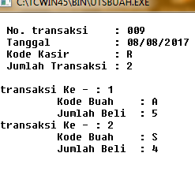
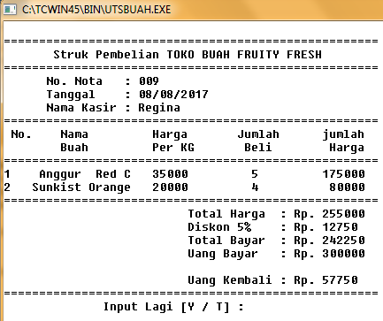
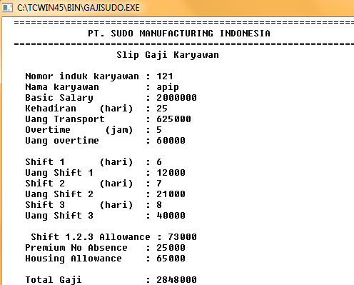
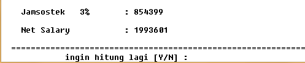
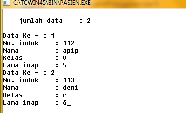
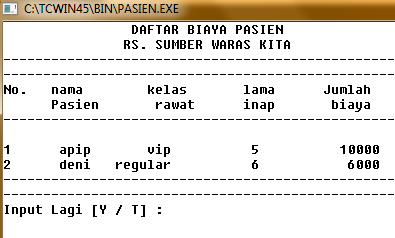
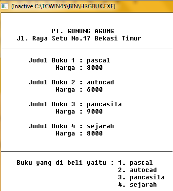
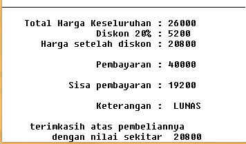
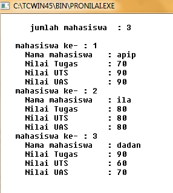
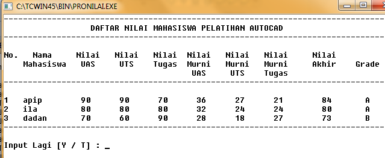

Turbo C++ merupakan kompiler C++ dengan IDE yang terintegrasi yang dikembangkan oleh Borland, terkenal karena kecepatannya dalam kompilasi dan linking. Produk ini merupakan bagian dari keluarga kompiler borland yang sangat populer termasuk Turbo Pascal, Turbo Basic, Turbo Prolog, dan Turbo C.
>>Ini adalah contoh source code membuat struk belanja pada sebuah toko buah dengan menggunakan array<<
#include<stdio.h>
#include<conio.h>
#include<iostream.h>
#include<iomanip.h>
main()
{
int i,j;
char tanya;
char tgl[10], nama_kasir[20];
char no_trans[5];
long jml_byr,ub,uk,total,disk;
char kd_buah[30], *jenis[30];
char kd_kasir, *kasir;
long jml_bel[30], jml_hrg[30];
long harga[30];
jml_byr = 0;
lagi:
clrscr();
cout <<endl;
cout <<" No. transaksi : ";gets(no_trans);
cout <<" Tanggal : ";gets(tgl);
cout <<" Kode Kasir : ";cin >>kd_kasir;
cout <<" Jumlah Transaksi : ";cin >>j;
cout <<endl;
if (kd_kasir == 'R' || kd_kasir == 'r')
{
kasir = "Regina";
}
else
if (kd_kasir == 'B' || kd_kasir == 'b')
{
kasir = "Bima";
}
else
if (kd_kasir == 'D' || kd_kasir == 'd')
{
kasir = "Dira";
}
else
{
kasir = "tidak ada";
}
for(i=1;i<=j;i++)
{
cout <<"transaksi Ke - : "<<i<<endl;
cout <<" Kode Buah : ";cin >>kd_buah[i];
cout <<" Jumlah Beli : ";cin >>jml_bel[i];
}
for(i=1;i<=j;i++)
{
if (kd_buah[i] == 'A' || kd_buah[i] == 'a')
{
jenis[i] = " Anggur Red C";
harga[i] = 35000;
}
else
if (kd_buah[i] == 'K' || kd_buah[i] == 'k')
{
jenis[i] = " Kiwi Selandia";
harga[i] = 25000;
}
else
if (kd_buah[i] == 'S' || kd_buah[i] == 's')
{
jenis[i] = "Sunkist Orange";
harga[i] = 20000;
}
else
{
jenis[i] = "Kode Salah";
harga[i] = 0;
}
}
clrscr();
cout <<endl;
cout <<"=====================================================\n";
cout <<" Struk Pembelian TOKO BUAH FRUITY FRESH\n";
cout <<"=====================================================\n";
cout <<" No. Nota : "<<no_trans<<endl;
cout <<" Tanggal : "<<tgl<<endl;
cout <<" Nama Kasir : "<<kasir<<endl;
cout <<"=====================================================\n";
cout <<" No. Nama Harga Jumlah jumlah \n";
cout <<" Buah Per KG Beli Harga \n";
cout <<"=====================================================\n";
for(i=1;i<=j;i++)
{
jml_hrg[i]= jml_bel[i] * harga[i];
cout<<setiosflags(ios::left)<<setw(4)<<i;
cout<<setiosflags(ios::left)<<setw(12)<<jenis[i];
cout<<setiosflags(ios::right)<<setw(8)<<harga[i];
cout<<setiosflags(ios::right)<<setw(10)<<jml_bel[i];
cout<<setiosflags(ios::right)<<setw(15)<<jml_hrg[i]<<endl;
jml_byr = jml_byr + jml_hrg[i];
}
cout <<"=====================================================\n";
cout <<" Total Harga : Rp. ";
cout<<jml_byr;
cout <<endl;
disk = 0.05 * jml_byr;
cout <<" Diskon 5% : Rp. ";
cout<<disk;
cout <<endl;
total = jml_byr - disk;
cout <<" Total Bayar : Rp. ";
cout<<total;
cout <<endl;
cout <<" Uang Bayar : Rp. ";
cin>>ub;
cout <<endl;
uk = ub - total;
cout <<" Uang Kembali : Rp. ";
cout<<uk;
cout <<endl;
cout <<"=====================================================\n";
cout <<" Input Lagi [Y / T] : "; cin >>tanya;
if (tanya == 'Y' || tanya == 'y')
goto lagi;
else
goto selesai;
getch();
selesai:
}
>>Ini adalah contoh tampilan inputnya<<

>>Ini adalah contoh tampilan outputnya<<

>>Ini adalah contoh source code membuat slip gaji karyawan pada suatu perusahaan<<
#include<iostream.h>
#include<conio.h>
#include<stdio.h>
int main()
{
int bilangan;
char lagi;
char nm[35];
char no[35];
long bs,kh,ut,ov,uo,s1,s2,s3,us1,us2,us3,totus,pre,ha,totgaji,jams,ns;
atas:
clrscr();
printf(" ============================================================\n");
printf(" PT. SUDO MANUFACTURING INDONESIA \n");
printf(" ============================================================\n");
printf(" Slip Gaji Karyawan \n");
printf("\n");
printf(" Nomor induk karyawan : ");
gets(no);
printf(" Nama karyawan : ");
gets(nm);
cout<<" Basic Salary : ";
cin>>bs;
cout<<" Kehadiran (hari) : ";
cin>>kh;
ut=kh*25000;
cout<<" Uang Transport : "<<ut<<endl;
cout<<" Overtime (jam) : ";
cin>>ov;
uo=ov*12000;
cout<<" Uang overtime : "<<uo<<endl;
printf("\n");
cout<<" Shift 1 (hari) : ";
cin>>s1;
us1=s1*2000;
cout<<" Uang Shift 1 : "<<us1<<endl;
cout<<" Shift 2 (hari) : ";
cin>>s2;
us2=s2*3000;
cout<<" Uang Shift 2 : "<<us2<<endl;
cout<<" Shift 3 (hari) : ";
cin>>s3;
us3=s3*5000;
cout<<" Uang Shift 3 : "<<us3<<endl;
printf("\n");
totus=us1+us2+us3;
cout<<" Shift 1.2.3 Allowance : "<<totus<<endl;
if (kh>=1 && kh<=25)
pre=25000;
else
pre=50000;
cout<<" Premium No Absence : "<<pre<<endl;
cout<<" Housing Allowance : ";
cin>>ha;
printf("\n");
totgaji=bs+ut+uo+totus+pre+ha;
cout<<" Total Gaji : "<<totgaji<<endl;
printf("\n");
jams=0.3*totgaji;
cout<<" Jamsostek 3% : "<<jams<<endl;
printf("\n");
ns=totgaji-jams;
cout<<" Net Salary : "<<ns<<endl;
printf("\n");
printf(" ============================================================\n");
printf(" ingin hitung lagi [Y/N] : ");
lagi = getche();
if(lagi=='Y' || lagi=='y' )
goto atas;
return 0;
}
>>Ini adalah contoh tampilan outputnya<<


>>Ini adalah contoh source code membuat daftar nama dan biaya pasien rawat inap di rumahsakit<<
#include <stdio.h>
#include <conio.h>
#include <iostream.h>
#include <iomanip.h>
main()
{
int i,j;
char tanya;
char no_ind[5], nama[10][20];
char kelas[30], *jenis[30];
int li[30];
long harga[30], jml_hrg[30];
//input data transaksi
lagi:
clrscr();
cout <<endl;
cout <<" jumlah data : ";cin >>j;
cout <<endl;
//input perulangan data
for(i=1;i<=j;i++)
{
cout <<"Data Ke - : "<<i<<endl;
cout <<"No. induk : ";gets(no_ind);
cout <<"Nama : ";cin >>nama[i];
cout <<"Kelas : ";cin >>kelas[i];
cout <<"Lama inap : ";cin >>li[i];
}
//proses mencari jenis dan harga
for(i=1;i<=j;i++)
{
if (kelas[i] == 'V' || kelas[i] == 'v')
{
jenis[i] = "vip";
harga[i] = 2000;
}
else
if (kelas[i] == 'R' || kelas[i] == 'r')
{
jenis[i] = "regular";
harga[i] = 1000;
}
else
if (kelas[i] == 'U' || kelas[i] == 'u')
{
jenis[i] = "umum";
harga[i] = 500;
}
else
{
jenis[i] = "Kode Salah";
harga[i] = 0;
}
}
//tampilan data
clrscr();
cout <<" DAFTAR BIAYA PASIEN \n";
cout <<" RS. SUMBER WARAS KITA\n";
cout <<"-------------------------------------------------\n";
cout <<"-------------------------------------------------\n";
cout <<"No. nama kelas lama Jumlah \n";
cout <<" Pasien rawat inap biaya \n";
cout <<"-------------------------------------------------\n\n";
for(i=1;i<=j;i++)
{
jml_hrg[i]= li[i] * harga[i];
cout<<setiosflags(ios::left)<<setw(7)<<i;
cout<<setiosflags(ios::left)<<setw(4)<<nama[i];
cout<<setiosflags(ios::right)<<setw(10)<<jenis[i];
cout<<setiosflags(ios::right)<<setw(11)<<li[i];
cout<<setiosflags(ios::right)<<setw(15)<<jml_hrg[i]<<endl;
}
cout <<"-------------------------------------------------\n\n";
cout <<"-------------------------------------------------\n";
cout <<"Input Lagi [Y / T] : "; cin >>tanya;
//proses input data kembali atau tidak
if (tanya == 'Y' || tanya == 'y')
goto lagi;
else
goto selesai;
getch();
selesai:
}
>>Ini adalah contoh tampilan inputnya<<

>>Ini adalah contoh tampilan outputnya<<

>>Ini adalah contoh source code membuat nota pembelian buku di sebuah toko<<
#include<iostream.h>
#include<stdio.h>
#include<conio.h>
int main()
{
int bilangan;
char jb1[45];
char jb2[45];
char jb3[45];
char jb4[45];
long hrg1,hrg2,tot,hrg3,hrg4,dis,pem,sp,hsd;
clrscr();
printf("\n");
printf("\n");
printf(" PT. GUNUNG AGUNG \n");
printf(" Jl. Raya Setu No.17 Bekasi Timur \n");
printf("____________________________________________\n");
printf("\n");
printf(" Judul Buku 1 : ");
gets(jb1);
cout<<" Harga : ";
cin>>hrg1;
printf("\n");
printf(" Judul Buku 2 : ");
gets(jb2);
cout<<" Harga : ";
cin>>hrg2;
printf("\n");
printf(" Judul Buku 3 : ");
gets(jb3);
cout<<" Harga : ";
cin>>hrg3;
printf("\n");
printf(" Judul Buku 4 : ");
gets(jb4);
cout<<" Harga : ";
cin>>hrg4;
printf("\n");
printf("____________________________________________\n");
printf("\n");
printf(" Buku yang di beli yaitu : 1. %s \n",jb1);
printf(" 2. %s \n",jb2);
printf(" 3. %s \n",jb3);
printf(" 4. %s \n",jb4);
printf("____________________________________________\n");
printf("\n");
tot=hrg1+hrg2+hrg3+hrg4;
cout<<" Total Harga Keseluruhan : ";
cout<<tot;
printf("\n");
dis=0.2*tot;
cout<<" Diskon 20% : ";
cout<<dis;
printf("\n");
hsd=tot-dis;
cout<<" Harga setelah diskon : "<<hsd<<endl;
printf("\n");
cout<<" Pembayaran : ";
cin>>pem;
printf("\n");
sp=pem-hsd;
cout<<" Sisa pembayaran : ";
cout<<sp;
printf("\n");
printf("\n");
cout<<" Keterangan : ";
if(pem>=hsd)
cout<<" LUNAS";
else
cout<<" BELUM LUNAS";
printf("\n");
printf("\n");
printf(" terimkasih atas pembeliannya \n");
cout<<" dengan nilai sekitar ";
cout<<hsd;
return 0;
}
>>Ini adalah contoh tampilan outputnya<<


>>Ini adalah contoh source code mencari nilai mahasiswa<<
#include <stdio.h>
#include <conio.h>
#include <iostream.h>
#include <iomanip.h>
main()
{
int i,j;
char tanya;
char nama[5][20];
long akhir[30],muas[20],muts[20],mtugas[20],nilai[20];
long tugas[30], uts[30], uas[20];
lagi:
clrscr();
cout <<endl;
cout <<" jumlah mahasiswa : ";cin >>j;
cout <<endl;
for(i=1;i<=j;i++)
{
cout <<" mahasiswa ke- : "<<i<<endl;
cout <<" Nama mahasiswa : ";cin >>nama[i];
cout <<" Nilai Tugas : ";cin >>tugas[i];
cout <<" Nilai UTS : ";cin >>uts[i];
cout <<" Nilai UAS : ";cin >>uas[i];
}
clrscr();
cout <<"-------------------------------------------------------------------------------\n";
cout <<" DAFTAR NILAI MAHASISWA PELATIHAN AUTOCAD \n";
cout <<"-------------------------------------------------------------------------------\n\n";
cout <<"No. Nama Nilai Nilai Nilai Nilai Nilai Nilai Nilai \n";
cout <<" Mahasiswa UAS UTS Tugas Murni Murni Murni Akhir Grade\n";
cout <<" UAS UTS Tugas \n";
cout <<"-------------------------------------------------------------------------------\n\n";
for(i=1;i<=j;i++)
{
mtugas[i] = tugas[i] * 30/100;
muas[i] = uas[i] * 40/100;
muts[i] = uts[i] * 30/100;
akhir[i] = mtugas[i] + muas[i] + muts[i];
cout<<setiosflags(ios::left)<<setw(4)<<i;
cout<<setiosflags(ios::left)<<setw(6)<<nama[i];
cout<<setiosflags(ios::right)<<setw(8)<<uas[i];
cout<<setiosflags(ios::right)<<setw(8)<<uts[i];
cout<<setiosflags(ios::right)<<setw(8)<<tugas[i];
cout<<setiosflags(ios::right)<<setw(8)<<muas[i];
cout<<setiosflags(ios::right)<<setw(8)<<muts[i];
cout<<setiosflags(ios::right)<<setw(8)<<mtugas[i];
cout<<setiosflags(ios::right)<<setw(10)<<akhir[i];
if(akhir[i] >= 80)
cout<<setiosflags(ios::right)<<setw(8)<<"A"<<endl;
else
if (akhir[i] >=70 && akhir[i] <= 79)
cout<<setiosflags(ios::right)<<setw(8)<<"B"<<endl;
else
if(akhir[i] >= 59 && akhir[i] <= 69)
cout<<setiosflags(ios::right)<<setw(8)<<"C"<<endl;
else
if(akhir[i] >= 50 && akhir[i] <= 58)
cout<<setiosflags(ios::right)<<setw(8)<<"D"<<endl;
else
if (akhir[i] <50)
cout<<setiosflags(ios::right)<<setw(8)<<"E"<<endl;
}
cout <<"-------------------------------------------------------------------------------\n\n";
cout <<"Input Lagi [Y / T] : "; cin >>tanya;
if (tanya == 'Y' || tanya == 'y')
goto lagi;
else
goto selesai;
getch();
selesai:
}
>>Ini adalah contoh tampilan inputnya<<

>>Ini adalah contoh tampilan outputnya<<
